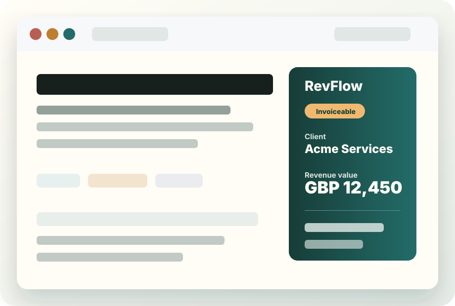

Start with a Jira issue
Create a quote from the issue panel or from the project Quotes page, so the commercial record starts beside the delivery scope.
Quote management for Jira Cloud
Quotaurus keeps scope, pricing, PDFs, quote emails, status history, and recurring monthly quote work inside Jira Cloud, so delivery and commercial context stay together.

The problem
Jira already holds the work. Quotaurus adds the commercial layer: client details, products, rates, VAT, currency, PO numbers, forecast dates, sent documents, and quote status, all tied back to the Jira issues that created the need.
How it works
Create a quote from the issue panel or from the project Quotes page, so the commercial record starts beside the delivery scope.
Add client, product, rate, quantity, VAT, currency, PO, system, revenue stream, notes, and forecast completion details.
Link open quotes to Jira issues, see the quote references from the issue panel, and open the full quote from the project page.
Preview the generated PDF and send it by email when Mailgun is configured, with recipient and sent-date metadata stored on the quote.
Move quotes through Draft, Sent, Accepted, Rejected, Invoiceable, Closed, and Cancelled, with version history kept for updates.
Auto-create monthly quote drafts from recurring templates for retainers, support packages, and scheduled service work.
Product tour
Linked quotes stay visible from the Jira issue that created the work.
Use the project view to create, edit, filter, and reopen quote records.
Capture products, rates, VAT, currency, PO, notes, and forecast dates.
Generate a PDF quote before sending it or sharing it manually.
Track quote status and keep version history for later reference.
Use billing-day templates, including last-day-of-month schedules.
Who it is for
Quote new scope, change requests, and client project work from delivery tickets.
Handle one-off requests and recurring monthly service packages from Jira.
Keep pricing, PO numbers, forecast dates, and delivery scope in one place.
Add a lightweight quoting workflow without introducing a separate CPQ system.
Sample output
| Product | Rate | Qty | Total |
|---|---|---|---|
| Support package | GBP 750.00 | 1 | GBP 750.00 |
| Implementation work | GBP 95.00 | 8 | GBP 760.00 |
SubtotalGBP 1,510.00
VATGBP 302.00
TotalGBP 1,812.00
Hi Sam,
Please find attached your quote PDF. The key details are below.
Email sending uses your saved Mailgun project settings. PDF generation does not require Mailgun.
Positioning
| Alternative | Common problem | Quotaurus positioning |
|---|---|---|
| Spreadsheets | Pricing gets separated from Jira scope. | Quotes stay tied to Jira issues and project context. |
| Generic CPQ | Too heavy for delivery teams that live in Jira. | Lightweight quoting inside Jira Cloud views. |
| Manual PDFs | Versions, status, and sent records are hard to track. | Quote status and version history stay on the quote record. |
| Separate quoting tools | Commercial context leaves the delivery workflow. | Quote records sit beside the Jira work they cover. |
| Broader Jira finance suites | Teams may not need a full billing or invoice platform. | Focused on scope-linked quoting and recurring monthly drafts. |
ROI
If a team creates 40 quotes per month and spends 20 minutes on each quote chasing scope, copying line items, formatting PDFs, and updating status, that is over 13 hours per month of quote admin. Quotaurus is designed to reduce those handoffs by keeping the quote workflow inside Jira.
Admin confidence
FAQ
Yes. The app is built for Jira Cloud and runs in Jira project and issue views.
Yes. Quotaurus supports quote creation from the Jira issue panel.
Yes. Open quotes can be linked to Jira issues and referenced from issue panels.
Yes. PDF generation is separate from Mailgun email sending.
Yes. Sending quote emails uses saved Mailgun project settings.
The quote editor supports VAT toggling and currency selection for line-item totals.
Yes. Recurring templates can generate monthly draft quotes on a selected billing day.
Email support with your Atlassian site URL, project or issue, steps, and screenshots.
Next step
Review pricing and Marketplace access, read the first-quote guide, or contact Quotaurus before rollout.